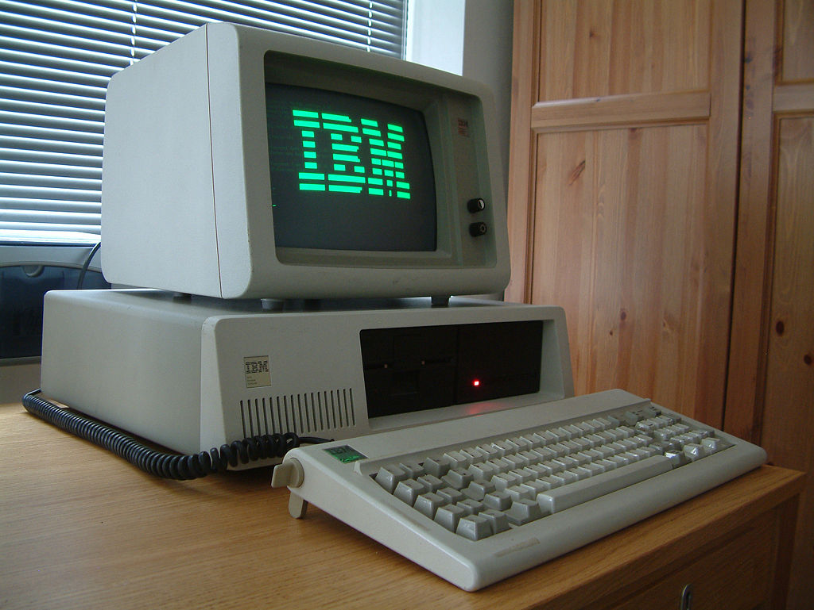
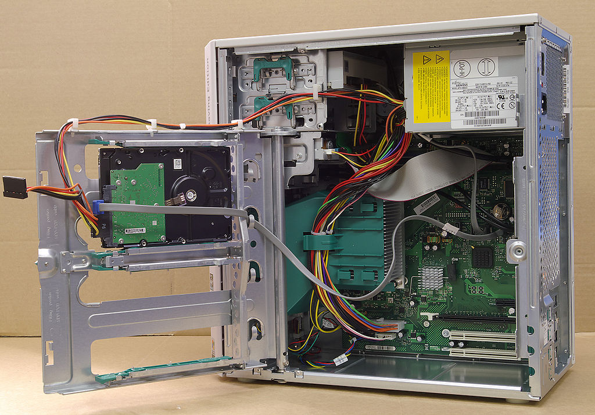

Descrizione dei 3 tipi di scheda madre
PC/XT :L'XT originale era dotato di 128 kB di RAM, un drive per floppy disk da 360 kB e 5 1/4", un hard disk da 10 MB, una porta seriale, otto slot ISA a 8 bit e un processore Intel 8088 a 4.77 MHz. Il sistema operativo era il PC-DOS 2.0. La presenza di otto slot era un miglioramento dei precedenti cinque slot, ma in realta' tre slot erano coperti dal controller del floppy disk drive, dal controller dell'hard disk e dal controller della seriale. Il modello successivo fu dotato di 256 kB di memoria e il modello che lo segui' venne fornito di 640 kB di RAM e di un hard disk di 20 MB.
Il modello originale dell'XT era inizialmente fornito con l'hard disk di serie, anche se nel 1985 venne realizzata una versione senza hard disk dato che allora era un componente molto costoso.
Come il PC originale, l'XT veniva fornito di un interprete BASIC nella ROM. Dato che l'interprete era progettato per funzionare con le audiocassette (il lettore non era disponibile per XT) l'unico modo di attivare l'interprete era disconnettere l'hard disk, e utilizzare un programma fornito su floppy disk che chiamava l'interprete tramite una chiamata di debug del BIOS.
La tastiera del PC originale e dell'XT non sono compatibili con il PC AT dato che utilizza un proprio codice di gestione dei tasti.

Advanced Technology) - Anche questo secondo formato divenne molto popolare, soprattutto per le schede madri 386. Ora è obsoleto, ma è stato la base per lo sviluppo dell'ATX.
La sigla ATX (dall'Inglese Advanced Technology Extended) e' uno standard diffuso che riguarda il case, la scheda madre e l'alimentatore di un Personal Computer. Questo standard fu definito inizialmente da Intel nel 1995, rivisto nel febbraio del 1997 con la release 2.01 che apporta delle leggere modifiche alla precedente versione 2.0. e nuovamente nel 2003 con la release 2.2, che oggi (2013) e' la più recente. Il precedente standard AT definiva in maniera generica le strutture per i PC-AT di IBM; questo standard fornisce invece delle indicazioni più specifiche, considerando le dimensioni della scheda madre, la posizione degli slot, dei fori per il fissaggio della scheda madre al case, dell'alimentatore e del contenitore, le posizioni e il colore dei connettori e il collegamento dell'alimentazione.
Questo standard e' fondamentale per permettere l'assemblaggio di Personal computer a partire da componenti di vari costruttori che, sebbene diversi tra loro, risultano compatibili e interscambiabili. Cosi' la sostituzione dei componenti e' più semplice e non impedisce futuri upgrade utilizzando lo stesso case.
Il BTX (Balanced Technology Extended) e' un form factor per scheda madre ovvero uno standard che ne definisce dimensioni e layout di riferimento, originariamente pensato per sostituire, tra il 2004 e il 2005, lo storico formato ATX (presente, nella sua prima revisione, dal 1995). E' stato proposto, come per l'ATX, da Intel, che nel Settembre 2006 ha annunciato la cancellazione del progetto [1].
Il motivo principale della sua progettazione e' stata l'ottimizzazione per ridurre al minimo i problemi che si sono venuti a creare con l'evoluzione delle tecnologie, principalmente le grandi quantita' di calore dissipato dalle CPU e schede video piu' potenti.
A questo proposito il layout della scheda madre ha subito diverse modifiche, ad esempio il posizionamento degli slot ram in modo che siano paralleli agli altri slot pci della scheda madre (nello standard atx gli slot ram sono invece ortogonali al flusso di aria che si crea nel pc, che va dall'anteriore del case verso il posteriore, e quindi i moduli ram in piccola misura tendono a ostacolare questo flusso).
La modifica che piu' caratterizza questo standard comunque e' il ribaltamento speculare della scheda madre, che non viene piu' montata sulla parete destra del case ma su quella sinistra, sempre per ragioni di efficienza del raffreddamento: in questa maniera infatti il dissipatore della scheda video si viene a trovare orientato verso l'alto, non verso il basso, avendo a disposizione spazio libero anziche' gli altri slot pci con altre eventuali schede, permettendo un miglior ricircolo di aria fresca ed eventualmente l'utilizzo di dissipatori meno limitati in altezza.
